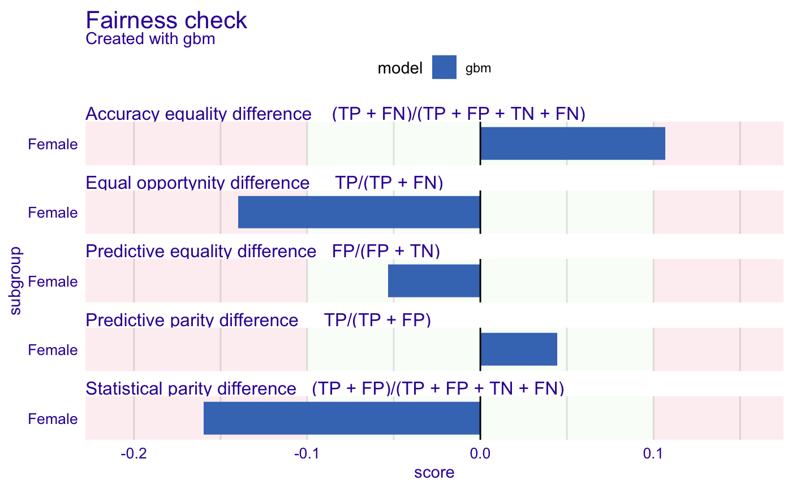
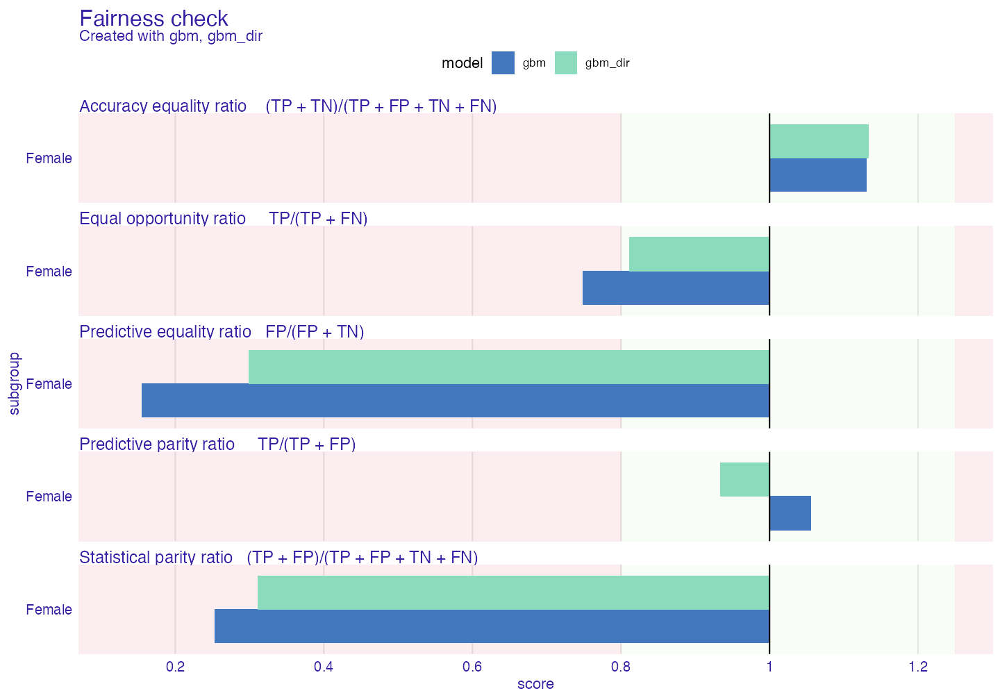
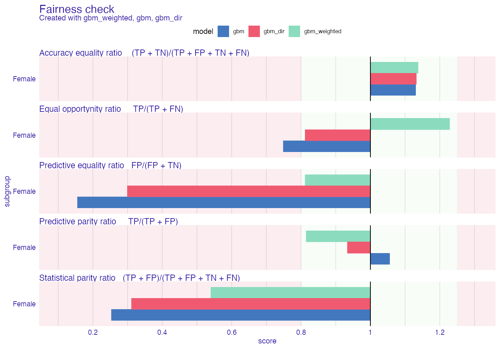
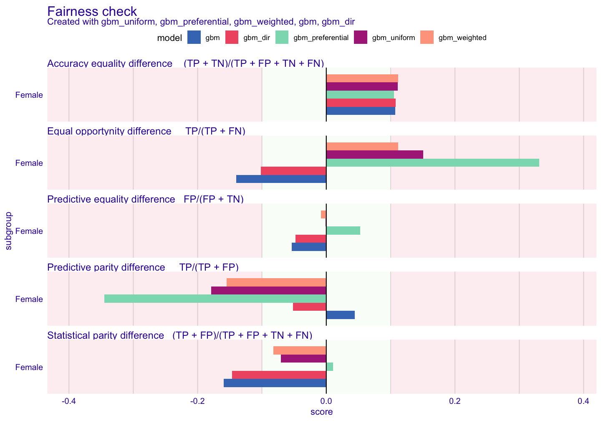
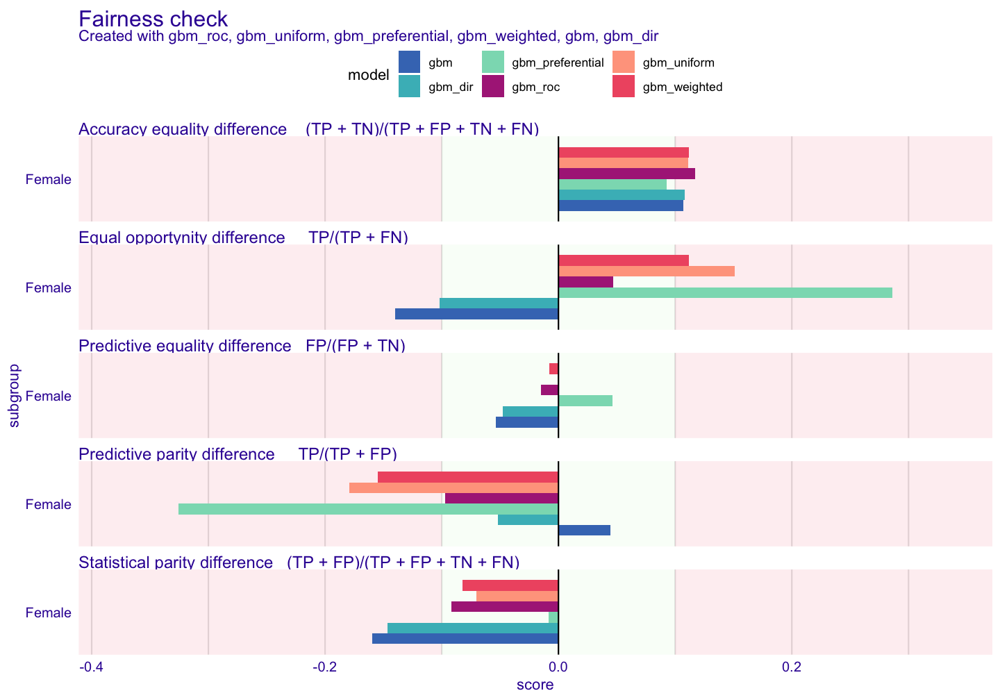
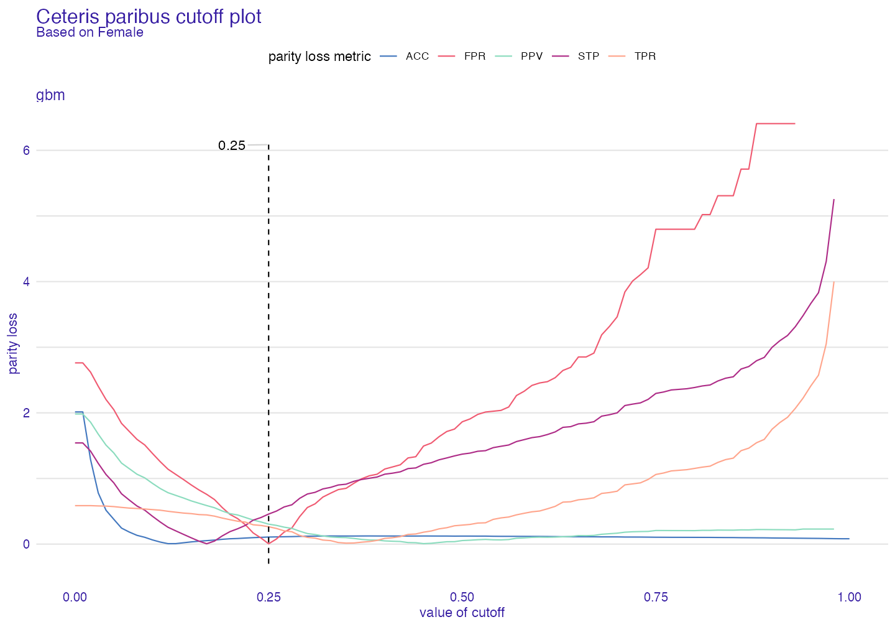
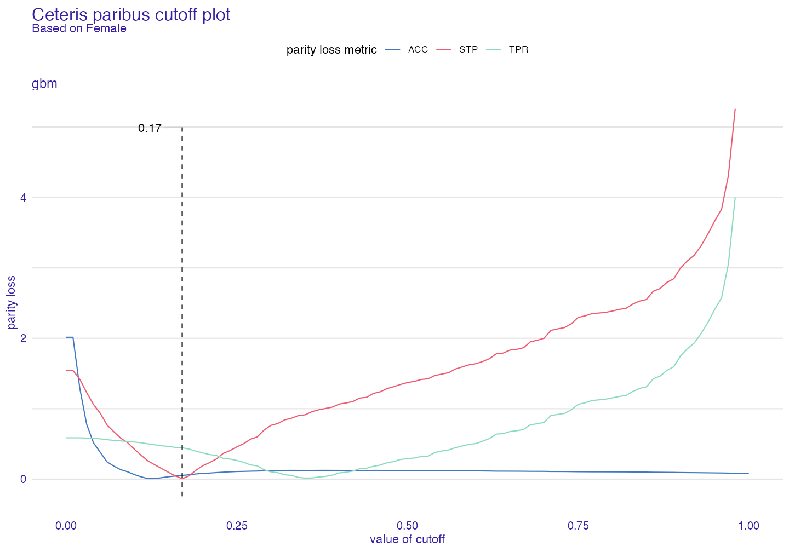
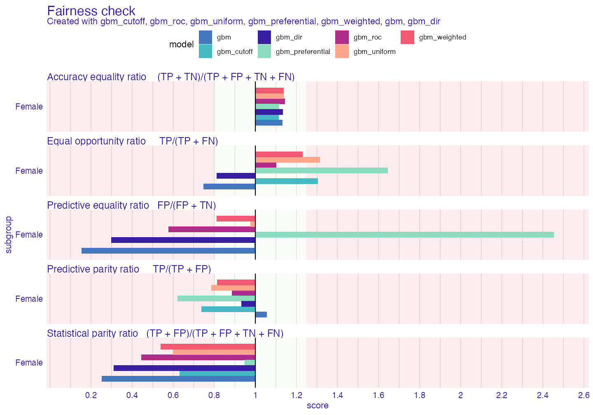
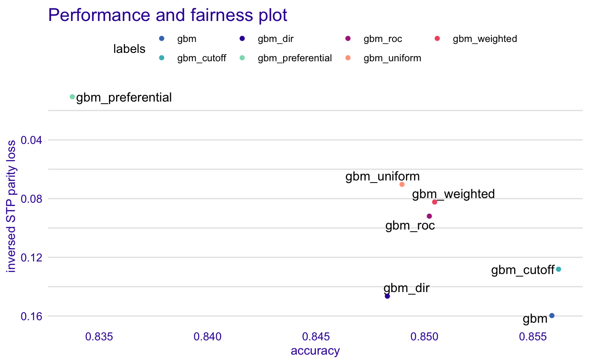

Advanced_tutorial.RmdIn this tutorial you will learn how to tackle bias using the bias mitigation techniques supported by fairmodels. As always we will start from the data.
#> salary age workclass fnlwgt education education_num marital_status
#> 1 <=50K 39 State-gov 77516 Bachelors 13 Never-married
#> 2 <=50K 50 Self-emp-not-inc 83311 Bachelors 13 Married-civ-spouse
#> 3 <=50K 38 Private 215646 HS-grad 9 Divorced
#> 4 <=50K 53 Private 234721 11th 7 Married-civ-spouse
#> 5 <=50K 28 Private 338409 Bachelors 13 Married-civ-spouse
#> 6 <=50K 37 Private 284582 Masters 14 Married-civ-spouse
#> occupation relationship race sex capital_gain capital_loss
#> 1 Adm-clerical Not-in-family White Male 2174 0
#> 2 Exec-managerial Husband White Male 0 0
#> 3 Handlers-cleaners Not-in-family White Male 0 0
#> 4 Handlers-cleaners Husband Black Male 0 0
#> 5 Prof-specialty Wife Black Female 0 0
#> 6 Exec-managerial Wife White Female 0 0
#> hours_per_week native_country
#> 1 40 United-States
#> 2 13 United-States
#> 3 40 United-States
#> 4 40 United-States
#> 5 40 Cuba
#> 6 40 United-StatesWe will use adult data to predict whether certain person has yearly salary exceeding 50 000 or not. Our protected variable will be sex. For this tutorial we will be using gbm and of course we will explain it with DALEX.
library(gbm) library(DALEX) adult$salary <- as.numeric(adult$salary) -1 # 0 if bad and 1 if good risk protected <- adult$sex adult <- adult[colnames(adult) != "sex"] # sex not specified # making model set.seed(1) gbm_model <-gbm(salary ~. , data = adult, distribution = "bernoulli") # making explainer gbm_explainer <- explain(gbm_model, data = adult[,-1], y = adult$salary, colorize = FALSE)
#> Preparation of a new explainer is initiated
#> -> model label : gbm ( default )
#> -> data : 32561 rows 13 cols
#> -> target variable : 32561 values
#> -> predict function : yhat.gbm will be used ( default )
#> -> predicted values : numerical, min = 0.0101498 , mean = 0.2409542 , max = 0.9864558
#> -> model_info : package gbm , ver. 2.1.8 , task classification ( default )
#> -> residual function : difference between y and yhat ( default )
#> -> residuals : numerical, min = -0.9790795 , mean = -0.0001445991 , max = 0.9864904
#> A new explainer has been created!model_performance(gbm_explainer)
#> Measures for: classification
#> recall : 0.5353909
#> precision : 0.7999238
#> f1 : 0.6414547
#> accuracy : 0.8558705
#> auc : 0.9093789
#>
#> Residuals:
#> 0% 10% 20% 30% 40% 50%
#> -0.97907954 -0.31512711 -0.20921106 -0.12255213 -0.06480941 -0.04122486
#> 60% 70% 80% 90% 100%
#> -0.02832005 -0.01740186 0.13344943 0.53676046 0.98649038Our model has around 86% accuracy. And how about bias? Sex is our protected variable and we should suspect that men will be more frequently assigned better annual income.
fobject <- fairness_check(gbm_explainer, protected = protected, privileged = "Male", colorize = FALSE)
#> Creating fairness object
#> -> Privileged subgroup : character ( Ok )
#> -> Protected variable : factor ( Ok )
#> -> Cutoff values for explainers : 0.5 ( for all subgroups )
#> -> Fairness objects : 0 objects
#> -> Checking explainers : 1 in total ( compatible )
#> -> Metric calculation : successful
#> Fairness object created succesfullyprint(fobject, colorize = FALSE)
#>
#> Fairness check for models: gbm
#>
#> gbm passes 2/5 metrics
#> Total loss: 0.504282Our model passes only few metrics, how big is the bias?
plot(fobject)

The biggest bias is in Statistical parity loss metric. It is metric that is frequently look at because it gives answer how much difference is there in positive label rates in model within protected variable. Let’s say that it will be metric that we will try to mitigate.
Pre-processing techniques focus on changing data before model is trained. This reduces bias in data.
Firs technique you will learn about is disparate_impact_remover. It is somehow limited as it works on ordinal, numeric data. This technique returns “fixed” data frame. Through parameter lambda we can manipulate with how much the distribution will be fixed. lambda = 1 (default) will return data with identical distributions for all levels of protected variable whereas lambda = 0 will barely change anything. We will transform a few features.
data_fixed <- disparate_impact_remover(data = adult, protected = protected, features_to_transform = c("age", "hours_per_week", "capital_loss", "capital_gain")) set.seed(1) gbm_model <- gbm(salary ~. , data = data_fixed, distribution = "bernoulli") gbm_explainer_dir <- explain(gbm_model, data = data_fixed[,-1], y = adult$salary, label = "gbm_dir", verbose = FALSE)
Now we will compare old explainer and new one.
fobject <- fairness_check(gbm_explainer, gbm_explainer_dir, protected = protected, privileged = "Male", verbose = FALSE) plot(fobject)

As we can see bias has diminished. But it is not on acceptable level for us. Let’s try something else. As for now we will add explainers to existing fairness_object to compare methods among themselves.
Reweighting is straightforward bias mitigation technique. It produces weights based on data to pass them to model so it can learn what to be careful about. As there can be multiple subgroups weights will come in form of vector.
weights <- reweight(protected = protected, y = adult$salary) set.seed(1) gbm_model <- gbm(salary ~. , data = adult, weights = weights, distribution = "bernoulli") gbm_explainer_w <- explain(gbm_model, data = adult[,-1], y = adult$salary, label = "gbm_weighted", verbose = FALSE) fobject <- fairness_check(fobject, gbm_explainer_w, verbose = FALSE) plot(fobject)

Our metric of interest (Statistical parity loss) has been diminished but in this process we exceeded acceptable limit for predictive parity loss. It is not something uncommon. To lower the statistical parity the model must classify some unfavorable cases from unprivileged subgroup as favorable and the opposite for privileged subgroup. Similar outcome will be visible in the next method
This method derives from reweighting the data but instead of weights it chooses observations from data the outcome of metrics. There is 2 types of resampling: 1. uniform - takes random observation from particular subgroup (in particular case - y == 1 or y == 0) 2. preferential - takes/omits observations either close to cutoff or as far from cutoff as possible. It needs probabilities (probs)
# to obtain probs we will use simple linear regression probs <- glm(salary ~., data = adult, family = binomial())$fitted.values uniform_indexes <- resample(protected = protected, y = adult$salary) preferential_indexes <- resample(protected = protected, y = adult$salary, type = "preferential", probs = probs) set.seed(1) gbm_model <- gbm(salary ~. , data = adult[uniform_indexes,], distribution = "bernoulli") gbm_explainer_u <- explain(gbm_model, data = adult[,-1], y = adult$salary, label = "gbm_uniform", verbose = FALSE) set.seed(1) gbm_model <- gbm(salary ~. , data = adult[preferential_indexes,], distribution = "bernoulli") gbm_explainer_p <- explain(gbm_model, data = adult[,-1], y = adult$salary, label = "gbm_preferential", verbose = FALSE) fobject <- fairness_check(fobject, gbm_explainer_u, gbm_explainer_p, verbose = FALSE) plot(fobject)

As we can see preferential sampling is best at mitigating statistical parity loss. As byproduct it also affects other metrics significantly.
Post-processing techniques focus on changing the output of model after model is generated
ROC stands for Reject Option based Classification and pivot for the behavior of probs/y_hat as it pivots around the cutoff when it is in close zone. Close zone is defined by the theta parameter equal to 0.1 by default. In simple words depending on whether subgroup is privileged or not certain observations will change their probabilities to the opposite (but in equal distance) side of cutoff. For example if observation is unprivileged and unfavorable with probability 0.45 (assuming the cutoff = 0.5) probability will change it’s value to 0.55.
# we will need normal explainer set.seed(1) gbm_model <-gbm(salary ~. , data = adult, distribution = "bernoulli") gbm_explainer <- explain(gbm_model, data = adult[,-1], y = adult$salary, verbose = FALSE) gbm_explainer_r <- roc_pivot(gbm_explainer, protected = protected, privileged = "Male") fobject <- fairness_check(fobject, gbm_explainer_r, label = "gbm_roc", # label as vector for explainers verbose = FALSE) plot(fobject)

gmb_roc is the best so far
print(fobject, colorize = FALSE)
#>
#> Fairness check for models: gbm_roc, gbm_uniform, gbm_preferential, gbm_weighted, gbm, gbm_dir
#>
#> gbm_roc passes 4/5 metrics
#> Total loss: 0.3675947
#>
#> gbm_uniform passes 2/5 metrics
#> Total loss: 0.5125624
#>
#> gbm_preferential passes 2/5 metrics
#> Total loss: 0.8442916
#>
#> gbm_weighted passes 2/5 metrics
#> Total loss: 0.4682607
#>
#> gbm passes 2/5 metrics
#> Total loss: 0.504282
#>
#> gbm_dir passes 2/5 metrics
#> Total loss: 0.4556241Cutoff manipulation is simple technique that enables to set different cutoff for different subgroups.
set.seed(1) gbm_model <-gbm(salary ~. , data = adult, distribution = "bernoulli") gbm_explainer <- explain(gbm_model, data = adult[,-1], y = adult$salary, verbose = FALSE) # test fairness object fobject_test <- fairness_check(gbm_explainer, protected = protected, privileged = "Male", verbose = FALSE) plot(ceteris_paribus_cutoff(fobject_test, subgroup = "Female"))

It is possible to minimize all metrics or only few metrics of our interest. In this case it is also 0.35 but feel free to experiment!
plot(ceteris_paribus_cutoff(fobject_test, subgroup = "Female", fairness_metrics = c("ACC","TPR","STP")))

fc <- fairness_check(gbm_explainer, fobject, label = "gbm_cutoff", cutoff = list(Female = 0.35), verbose = FALSE) plot(fc)

print(fc , colorize = FALSE)
#>
#> Fairness check for models: gbm_cutoff, gbm_roc, gbm_uniform, gbm_preferential, gbm_weighted, gbm, gbm_dir
#>
#> gbm_cutoff passes 3/5 metrics
#> Total loss: 0.3555507
#>
#> gbm_roc passes 4/5 metrics
#> Total loss: 0.3675947
#>
#> gbm_uniform passes 2/5 metrics
#> Total loss: 0.5125624
#>
#> gbm_preferential passes 2/5 metrics
#> Total loss: 0.8442916
#>
#> gbm_weighted passes 2/5 metrics
#> Total loss: 0.4682607
#>
#> gbm passes 2/5 metrics
#> Total loss: 0.504282
#>
#> gbm_dir passes 2/5 metrics
#> Total loss: 0.4556241There is significant tradeoff between bias and accuracy one way to visualize it is to use performance_and_fairness function
paf <- performance_and_fairness(fc, fairness_metric = "STP", performance_metric = "accuracy")
#>
#> Creating object with:
#> Fairness metric: STP
#> Performance metric: accuracyplot(paf)

The tradeoff is significant and it should be always be taken into consideration.
There is many ways to tackle bias in models. Thanks to fairmodels it is easy to compare changes and experiment with new models and bias mitigation techniques. It is also good idea to combine few techniques (for example minimizing once with weights and then with cutoff). fairness_check interface is flexible and allows combining models that were trained on different features, encodings etc. Please if you encounter some bug or you have an idea for new feature please write and issue here.